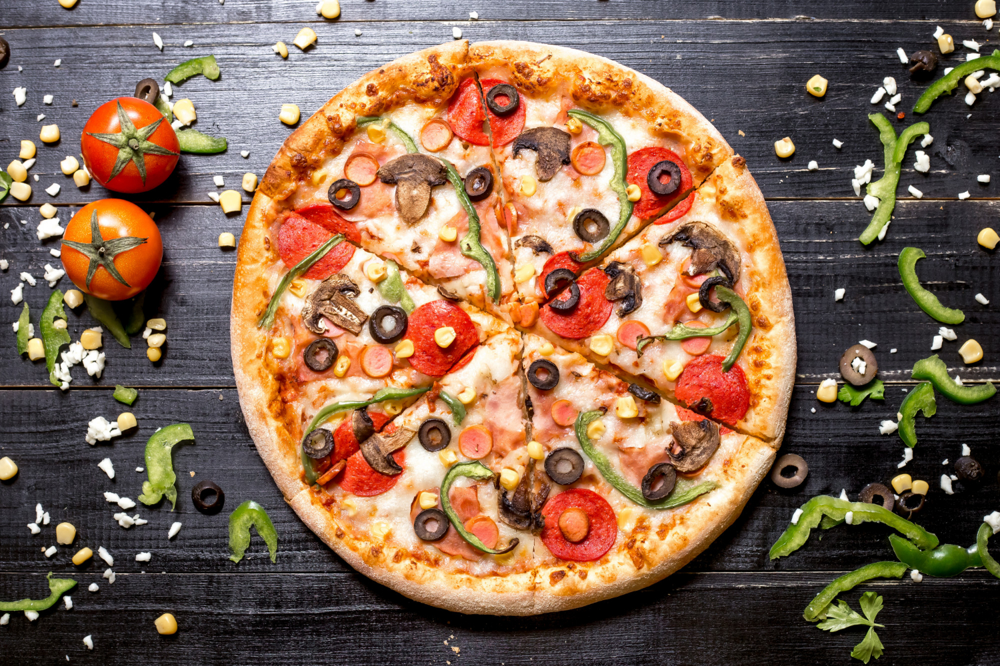

Pizza

Description
Pizza is a crowd-pleasing choice for busy weeknights and fun weekend dinners alike. But you don't have to rely on restaurants or takeout for top-notch pizza. Read on for tips on how to make your own pizza at home. We'll walk you through how to make pizza crust, how to top a pizza, pizza baking temperature, and how long to bake pizza. Plus, we'll share some of our favorite homemade pizza recipes to try.
Ingredients
- 2 tablespoons butter, melted
- 1 tablespoon olive oil
- 3 tablespoons minced garlic
- 2 tablespoons sun-dried tomato pesto
- 1 teaspoon dried basil
- 1 teaspoon dried oregano
- 1 tablespoon grated Parmesan cheese
- 1 cup Alfredo sauce
- 2 cups chopped cooked chicken breast meat
- 1 (12 inch) pre-baked pizza crust
- 1 medium tomato, sliced
- 1 (4 ounce) package feta cheese
Steps
- Preheat the oven to 375 degrees F (190 degrees C).
- In a small bowl, mix together the butter, olive oil, garlic, pesto, basil, oregano, Parmesan cheese, and Alfredo sauce.
- Arrange the chicken on top of the pizza crust.
- Pour the Alfredo sauce mixture evenly over the chicken.
- Top with tomato and feta cheese.
- Bake for 10 to 15 minutes in the preheated oven, until the crust is lightly browned and toppings are toasted.
- Cut into wedges to serve.
Back to home